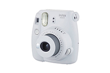

Welcome to Fotoaparatai
Kokį fotoaparatą pirkti? Naujoko gidas
2020.10.29 06:22Užsiregistruoti Prisijungti Pagalba Paieška FotoŽinios Straipsniai Skelbimai Forumas Terminai Gairės FotoTechnika Fotoaparatai Fotoaparatų testai Objektyvai Parduotuvės Foto Kursai Vienos dienos kursai Kursų kalendorius Registruotis Nuotraukos FotoSrautas FotoMokykla Draugams FotoKonkursai Grupės Žemėlapis Fotografai Bendruomenė Profesionalų paslaugos Įdomūs fotografai Žemėlapis Kokį fotoaparatą pirkti? Naujoko gidas 2016.01.27 Naujienos: kompaktiniai fotoaparatai , sisteminiai fotoaparatai , veidrodiniai fotoaparatai
Šis gidas skirtas naujokui ieškančiam gero fotoaparato nuo 300 iki 600-900 €.
Fotoaparatų klasės
Kompaktiški - tai fotoaparatai su nekeičiamais objektyvais
Sisteminiai - tai nedideli fotoaparatai su keičiamais objektyvais. Tai pat vadinami beveidrodiniais.
Veidrodiniai - didesni fotoaparatai su keičiamais objektyvais.
Dydis
Pirmiausia būtina apsispręsti, kokio dydžio fotoaparatą esate pasirengęs nešioti . Didesni fotoaparatai paprastai yra geresni, bet visą laiką tokius nešiotis nėra patogu – per didelis fotoaparatas, ko gero, dažniau dulkės lentynoje nei fotografuos.Valdymas ir galimybės
Mažų kompaktiškų fotoaparatų valdymo galimybės ypač kuklios. Net jei įmanoma valdyti jų fotografavimo parametrus, tai daryti nėra patogu. Tad šiuose fotoaparatuose rekomenduojama (patogu) naudoti tik automatinį, išjungtos blykstės ir siužetinių programų režimus.Kuo fotoaparatas didesnis ir brangesnis, kuo daugiau jame įtaisyta mygtukų, tuo jį valdyti patogiau.
Be to, didesnius fotoaparatus patogiau laikyti.
Fotoaparatų tipai. Visi fotoaparatai parodyti proporcinų dydžių ty galima palyginti jų dydžius Fotoaparatų tipai. Visi fotoaparatai parodyti proporcinų dydžių ty galima palyginti jų dydžius
Nuotraukų kokybė
Nuotraukų kokybė tiesiogiai priklauso nuo jutiklio dydžio.Didesnis fotoaparato jutiklis yra jautresnis, geriau perteikia spalvas ir didelius šviesumo kontrastus, geriau tinka portretams, meninei fotografijai.
Jutiklių dydžiai Pigiuose kompaktiškuose fotoaparatuose yra 7–8 mm įstrižainės jutikliai, geresniuose (apie 400 €) – 10 mm.
Sisteminiuose fotoaparatuose yra 22 mm („Olympus PEN“ ir „Panasonic“), 28 mm („Sony NEX“, „Samsung NX“) jutikliai.
Veidrodiniuose fotoaparatuose įtaisyti 28 mm ir 43 mm (profesionalams skirtuose modeliuose nuo 2000 €) jutikliai.
Kaina
Kiek mokate, tiek ir gaunate.Jei už fotoaparato komplektą mokėsite pigiai (iki 150 €), gausite prastą kokybę ir mažai galimybių - tai nebrangūs kompaktiniai fotoaparatai.
Jei mokėsite vidutiniškai (150-300 €), turėsite daug galimybių (makro, didelis „zoomas“), bet menką kokybę - tai didesnių galimybių kompaktiniai fotoaparatai. Jei mokėsite daugiau (300-600 €), turėsite mažai galimybių, bet geresnę kokybę - tai pigiausi sisteminiai ar veidrodiniai fotoaparatai.
Jei mokėsite brangiai (per 600 €), didelė tikimybė, kad įgysite daug galimybių ir aukštą kokybę.
O jei mokėsite kaip profesionalai (per 2000 €), galėsite mėgautis puikia kokybe ir plačiomis galimybėmis.
Pirkti kompaktišką ar rimtesnį?
Fotoaparato dydis ir vaizdo kokybė nėra svarbiausi kriterijai ir vis dar neapsisprendžiate? Ok ...Jei turite apie 300 €, tai rekomenduojame pirkti kompaktišką fotoaparatą. Tokios kainos kompaktiškas fotoaparatas turės dideles galimybes ir greičiausiai tenkins visus Jūsų poreikius. Bet turės kompaktiškiems fotoaparatams įprastus trūkumus: prietemoje vaizdo kokybė bus prastesnė, fokusuos prasčiau, o fotografuojant portretus fono „neišplaus“. Plačiau apie tai: Kokį fotoaparatą pirkti? Vizualus gidas.
Jei turite bent 500 € tai galima nusipirkti veidrodinį ar sisteminį fotoaparatą, bet žinokite, kad tai bus pakankamai ribotų funkcijų fotoaparatas: nebus nei makro funkcijos, nei ypač plataus kampo objektyvo, nei didelio optinio didinimo (tam reikia pirkti papildomus objektyvus), ekranėlis bus paprastesnis, o fotografavimo sparta - mažesnė. Bet veidrodinio arba sisteminio fotoaparato nuotraukų kokybė - aukštesnė.
Fotoaparatų suvestinė
Nuotraukų kokybė - tai nuotraukų (spalvų) realistiškumas, kokybė prietemoje, fono „išplovimas“.Galimybės - tai makro, „zoom'as“, fotoaparato valdymas, kūrybinės galimybės, GPS, WiFi, priedai.
Plačiau apie nuotraukų kokybę galima paskaityti straipsnyje Kokį fotoaparatą pirkti? Vizualus gidas.
Fujifilm FinePix F550EXR Kompaktiški, maži
Nuotraukų kokybė ● - ●●Galimybės ● - ●●●
Dydis, svoris ● - ●●
Kaina 100–500 €
+ Telpa į kišenę, galima visada nešiotis
+ Yra makro funkcija fotografuoti iš arti
- Nuotraukų kokybė gera tik tada, kai geras apšvietimas
- Lėtai fokusuoja, ypač prietemoje
- Minimalios valdymo galimybės. Patogu fotografuoti tik Auto režimu
Optimalus pirkinys (apie 400 €): www.efoto.lt/fotoaparatai/result?size=2&in_price0=380...
Panasonic Lumix DMC-FZ100 Kompaktiški, vidutiniški - didesni
Nuotraukų kokybė ● - ●●Galimybės ●●● - ●●●●
Dydis, svoris ●●●
Kaina 150–500 €
+ Didesnės fotografavimo valdymo galimybės
+ Patogiau valdyti
+ Didelio židinio nuotolio objektyvas (priartina)
+ Yra makro funkcija fotografuoti iš arti
- Nuotraukų kokybė gera tik tada, kai geras apšvietimas
- Lėtai fokusuoja, ypač prietemoje
- Didokas
Optimalus pirkinys (apie 600 €): www.efoto.lt/fotoaparatai/result?size=3&in_price0=570...
Panasonic Lumix DMC-LX5 Kompaktiški, didesnių galimybių - prabangūs
Nuotraukų kokybė ●● - ●●●Galimybės ●●●
Dydis, svoris ●● - ● ● ●
Kaina 500–1000 €
+ Kompaktiškas
+ Didesnės fotografavimo valdymo galimybės
+ Patogiau valdyti
+ Turi geresnius jutiklį, objektyvą, ekranėlį, korpusą
+ Yra makro funkcija
- Prietemoje nuotraukų kokybė vidutiniška
Optimalus pirkinys : (apie 900 €): www.efoto.lt/fotoaparatai/result?size=2&in_price0=840...
Olympus PEN E-PL3 Sisteminiai (neveidrodiniai, nebrangūs)
Nuotraukų k okybė ●● ● - ●●●●Galimybės ●●●
Dydis, svoris ●●●
Kaina (su objektyvu): 300–1000 €
Yra ir aukštesnės klasės sisteminiai, bet dar mažai paplitę
+ Gera nuotraukų kokybė
+ Greitas autofokusas
+ Galima keisti objektyvus
- Nedidelis objektyvų pasirinkimas, objektyvai brangūs
- Nėra optinio ieškiklio
Optimalus pirkinys (apie 600 €): www.efoto.lt/fotoaparatai/result?size=4&in_price0=570...
Nikon D3100 Veidrodiniai (mėgėjiški ir pusiau Pro)
Nuotraukų k okybė ●●● - ●●●●●Galimybės ●●● - ●●●●●
Dydis, svoris ●●●● - ●●●●●
Kaina (su objektyvu) 400–2000 €
+ Gera nuotraukų kokybė
+ Greitas ir tikslus autofokusas
+ Didelė objektyvų ir priedų pasiūla
- Gana dideli ir sunkūs
- Naudojant ekranėlį, fotoaparatas fokusuoja lėtai
Optimalus pirkinys (apie 900 €): www.efoto.lt/fotoaparatai/result?size=5&in_price0=840...
Atkreipti dėmesį
eFoto funkcijos/kaina reitingasPrie kiekvieno Lietuvoje parduodamo fotoaparato rašomas eFoto funkcijos/kaina santykio reitingas. Jis apskaičiuojamas automatiškai, bet drįstame tvirtinti, yra labai tikslus ir į jį pirmiausia būtina atsižvelgti ieškant optimalaus pirkinio. eFoto rekomenduojamų fotoaparatų sąrašas sudaromas taip pat pagal šį reitingą. Sąrašo viršuje - optimalūs pirkiniai.
Pavyzdžiui, geriausi apie 600 € kainuojantys fotoaparatai: www.efoto.lt/fotoaparatai/result?in_price0=600
Fotoaparato naujumas: naujesnis – geriau
Naujesnis fotoaparatas – geriau, aišku. Moraliai fotoaparatai pasensta per 2–4 metus nuo fotoaparato pristatymo datos. Bet patys naujausi visad būna ženkliai brangesni, nors nebūna žymiai geresni. Todėl visai verta pirkti apie metų senumo fotoaparatus.
Jutiklio jautris: kuo didesnis – tuo geriau
Kuo didesnis jutiklio jautris, tuo fotoaparatas kokybiškiau fotografuoja prietemoje (be blykstės). Kompaktiškiems fotoaparatams geras jautris yra 1600, o labai geras – 6400 ISO. Sisteminių ir veidrodinių fotoaparatų jutiklio jautris dar didesnis: 3200 ISO, 12 800 ISO ir kt. (profesionalų modelių)
Privalumai. Pageidautina, kad fotoaparatas turėtų...
Optinis vaizdo stabilizavimas, vartomas ekranėlis, didesnės raiškos ekranėlis (400 tūkst. ar daugiau taškų), supermakrorežimas (kompaktiškuose fotoaparatuose, 1 cm atstumu), talpesnis akumuliatorius.
Gali praversti ir Full HD filmavimo funkcija (nors ji neužtikrina puikios vaizdo kokybės), GPS imtuvas ir apsauga nuo vandens bei dulkių.
Į firmą nereikėtų kreipti dėmesį
Teiginys „X gamina gerai, o Y – blogai“ yra visiškai nelogiškas. Jei taip būtų, Y kaipmat bankrutuotų, o X liktų vienintelis gamintojas. Rinka „reguliuoja“ fotoaparatų kainas ir kokybę. Bet atskiri modeliai vis dėlto skiriasi. Iš eFoto sudaryto sąrašo (dešinėje, "Gerų pasiūlymų vitrina") rekomenduojame rinktis tuos, kurių geresnis funkcijos/kainos santykis.
Perkant kompaktišką fotoaparatą
Objektyvas: mažesni židinio nuotolis ir diafragma – geriauPlačiakampis objektyvas yra privalumas – juo geriau fotografuoti peizažus, architektūrą. Tad minimalus objektyvo židinio nuotolis (atitikmuo) turi būti bent 28 mm, dar geriau – 24 mm.
Labai svarbus ir objektyvo šviesumas – maksimali diafragma. Labai gerai, kai objektyvo diafragma f/2.8 ar net F/2.0.
Megapikselių skaičius: daugiau – nėra geriau (taip, tai ne klaida)
Kuo jutiklyje daugiau jautrių taškų, tuo prastesnė nuotraukų kokybė. Tad rinkdamiesi fotoaparatą, į šį skaičių nekreipkite dėmesio.
10–12 mln. taškų visiškai pakaks jūsų poreikiams – nuotraukų ir albumų spaudai. Internetui visiškai pakanka ir 3-5 megapikselių nuotraukų.
Į ką nekreipti dėmesio perkant kompaktišką fotoaparatą
Kompaktiškuose fotoaparatuose įdiegiamos rimtesnių fotoaparatų funkcijos, kurios, deja, gerai neveikia.
Tad į didelį taškų skaičių, didelį optinį didinimą, rankinį valdymą ar rankinį fokusavimą, didelę fotografavimo spartą nevertėtų kreipti daug dėmesio – kompaktiški fotoaparatai šių funkcijų neatliks gerai, jomis naudotis bus nepatogu.
Perkant veidrodinį ar sisteminį fotoaparatą
Veidrodinį ar sisteminį?Jei nebijote dydžio ir svorio, norite maksimalių galimybių ir į fototechniką per kelis metus pasiryžę investuoti virš 1000 € - Jums geriausia pirkti veidrodinį fotoaparatą.
Jei mėgstate kompaktiškesnius fotoaparatus, bet norite kokybės, planuojate turėti tik 1-2 objektyvus - Jums tiks sisteminis fotoaparatas.
Dydžių palyginimas: 2 sisteminiai fotoaparatai tikrai mažesni už veidrodinį fotoaparatą.
Sisteminis Sony NEX-7, veidrodnis Nikon D3100 ir sisteminis Panasonic GF3 su kompaktišku zoom objektyvu Sisteminis Sony NEX-7, veidrodnis Nikon D3100 ir sisteminis Panasonic GF3 su kompaktišku zoom objektyvu
Objektyvų kainos ir pasirinkimas
Nuo fotoaparato objektyvo ypač priklauso nuotraukų kokybė ir Jūsų kūrybinės galimybės. Tad prieš pirkdami tam tikros formos fotoaparatą, pasidomėkite, kiek kainuoja šios firmos didelės diafragmos portretiniai objektyvai (f/1.4-f/1.8, 35-50 mm) ir pastovios diafragmos (f/2.8) zoom (kintamojo židinio nuotolio) objektyvai.
Objektyvų katalogas: www.efoto.lt/objektyvai
Veidrodiniai Canon ar Nikon ar ... ?
Kaip minėta, veikia natūralus rinkos reguliavimas ir visos firmos siūlo savo pakankamai optimalius variantus.
Bet kiekvieno gamintojo fotoaparatų linija turi savų ypatybių:
Veidrodiniai Canon ir Nikon - didelis objektyvų ir fotoaparatų pasirinkimas.
Veidrodiniai Sony - inovatyvios technologijos (pusiau skaidrus veidrodis), platus fotoaparatų pasirinkimas, bet objektyvų dar nėra daug.
Veidrodiniai Pentax - objektyvų pasiūla nebloga, bet fotoaparatų nėra daug, jie paprastai labiau tinkami mėgėjams.
Sisteminiai Olympus ar Sony ar ...?
Sisteminiai fotoaparatai - tai rinkos naujiena, tad objektyvų pasirinkimas nėra didelis. Verta atkreipti dėmesį į jutiklio dydį (rašyta aukščiau). Sisteminiai Sony , Samsung ir Pentax K turi didžiausius jutiklius, tad vaizdo kokybė pas juos geriausia, bet šių fotoaparatų objektyvai yra didesni ir sunkesni. Olympus ir Panasonic užima tarpinę, optimalią dydžio ir vaizdo kokybės poziciją.
Sisteminiai Nikon ir Pentax Q turi mažiausią jutiklį, tad šių fotoaparatų nuotraukų kokybė yra tik vos aukštesnė už gerų kompaktiškų fotoaparatų nuotraukų kokybę.
Noriu paklausti ...
Pirma, paklauskite paieškos - įrašykite dominančių modelių pavadinimus: www.efoto.lt/search/node
Išsamiai suformuluotus klausimus galite rašyti į eFoto forumą: www.efoto.lt/node/add/forum
Nepamirškite parašyti, kiek pinigų ketinate išleisti, ką mėgstate fotografuoti.
Jei turite specifinių klausimų, klauskite grupėse: www.efoto.lt/grupes/92427
Verta paskaityti: Kokį fotoaparatą pirkti? Vizualus gidas.
Rekomenduojami eFoto rekomenduojami fotoaparatai .
● Vertinimas 79.6
Jei tikrai norite aptarti, sukurkite temą forume.
Įdomiausi mėnesio straipsniai
Humoras fotografijoje..5 komentarai Konkurso „Šuo – žmogaus draugas“ nugalėtojai
2 komentarai Renata Nedzveckaitės (Plukė foto) - šeimos fotoknygos
0 komentarų Limitas jau 500/1000 KB
9 komentarai Skysto lęšio technologija
3 komentarai
Panašūs straipsniai
Geriausi fotoaparatai. eFoto.lt 2016 vasaros gidas
2016.06.13 Naujienos: kompaktiniai fotoaparatai , sisteminiai fotoaparatai , veidrodiniai fotoaparatai Rašyti komentarą + 17.6 Pentax K-3 iiRekomenduojamu sezono (kelionių!) fotoaparatu jau ketinome skelbti mažyti ir funkcionalų Panasonic Lumix DMC-GF7 , bet 0 šio fotoaparato pirkėjų primena, jog maži fotoaparatai labiau mėgstami Japonijoje nei Lietuvoje ;)
Taigi, šį sezoną rekomenduojame pusiau-pro lygio, greitą, funkcionalų, nuo lietaus ir dulkų apsaugotą Pentax K-3 II . Skaityti toliau...
Geriausi fotoaparatai. eFoto.lt 2016 pavasario gidas
2016.03.05 Naujienos: kompaktiniai fotoaparatai , sisteminiai fotoaparatai , veidrodiniai fotoaparatai 3 + 10.7 Olympus PEN E-PL6Tradiciškai, pirmiausia rekomenduojame mėgėjui tinkamą sisteminį fotoaparatą. Visi jie neblogi, randa savo pirkėją.
Tebūnie šį kartą tai bus Olympus PEN E-PL6 - fotoaparatas turi vartomą ekranėlį, patogų valdymą, o su 2 objektyvais nekainuoja 380€.
Jei galite išleisti daugiau, rekomenduojame Sony Cyber-shot DSC-RX100 IV - tai nedidelis, bet pakankamai universalus, didesnį jutiklį turintys, kelionėms tinkamiausias fotoaparatas. Skaityti toliau...
Geriausi fotoaparatai. eFoto.lt 2015/2016 žiemos gidas
2015.11.03 Naujienos: kompaktiniai fotoaparatai , sisteminiai fotoaparatai , veidrodiniai fotoaparatai 21 + 23.5 Panasonic Lumix DMC-LX100 Kokie fotoaparatai geriausi? Aišku, kad naujausi ir brangiausi! ;)O rasti tinkamą fotoaparatą už mažiausią kainą gerokai sunkiau..
Dažniausiai rekomenduojame nedidelius ir nebrangius bet funkcionalius sisteminius fotoaparatus (žr. žemiau), bet šį sezoną kviečiame prisiminti aukštos klasės kompaktiškus fotoaparatus. Brangesni „kompaktai“ dažniausiai turi patogų valdymą ir didesnį jutiklį (16-22mm), kas garantuoja aukštesnę nuotraukų kokybę, kuri beveik prilygsta veidrodinių ir sisteminių fotoaparatų nuotraukų kokybei. O svarbiausia - aukštos klasės kompaktai komplektuojami kokybišku, universaliu ir „šviesiu“ objektyvu. Skaityti toliau...
Geriausi fotoaparatai. eFoto.lt 2015 vasaros gidas
2015.06.08 Naujienos: kompaktiniai fotoaparatai , sisteminiai fotoaparatai , veidrodiniai fotoaparatai 21 + 18.5 Nikon D7200 Vasara - kelionių metas.Įprastai mes rekomenduojame jau žinomus nedidelius ir nebrangius sisteminius fotoaparatus Samsung NX3000 ir Sony A6000 . Bet šiems fotoaparatams siūlomų objektyvų kiekis ir kainos nedžiugina.
Rimtiems fotoentuziastams rekomenduojame naują pusiau-pro klasės Nikon D7200 . Skaityti toliau...
Geriausi fotoaparatai. eFoto.lt 2015 pavasario gidas
2015.03.25 Naujienos: kompaktiniai fotoaparatai , sisteminiai fotoaparatai , veidrodiniai fotoaparatai Rašyti komentarą + 46.8 Sony A6000Sensacija!
eFoto lankytojai kovo mėnesį pirmą kartą labiausiai domėjosi sisteminiu fotoaparatu - tai Sony A6000 .
Bet daugiausia vis dar perkami veidrodiniai fotoaparatai.
Visas sąrašas .. Skaityti toliau...
Naujausi skelbimai Visi [+3 nauji] Įdėti naują .. Mano skelbimai
Sony A5100 fotoaparatas ir SONY APS-C objektyvai
fototechnikos baterijos, krovikliai ir atminties kortelės
Parduodu 5in1 reflektorių 110 cm 2 Apšvietimo rinkinys su lempomis Sony A5100 fotoaparatas ir SONY APS-C objektyvai Pokalbiai Visi Pokalbiai MANO grupėse Naujas .. 8 Filtrai objektyvamsPokalbiai grupėse
Pagalba Pagalba (DUK) Nuotraukų įdėjimas Vertinimo sistema Autorių teisės Apie eFoto Apie eFoto.lt Taisyklės Kontaktuoti Katalogas Fotoaparatai Objektyvai Pro fotografai Paremti eFoto eFoto serverio išlaikymas šį mėnesį kainuoja 169.40€ . . Dabar surinkta 186.00€ . Paremk eFoto, užsakyk paslaugą NARYS .
